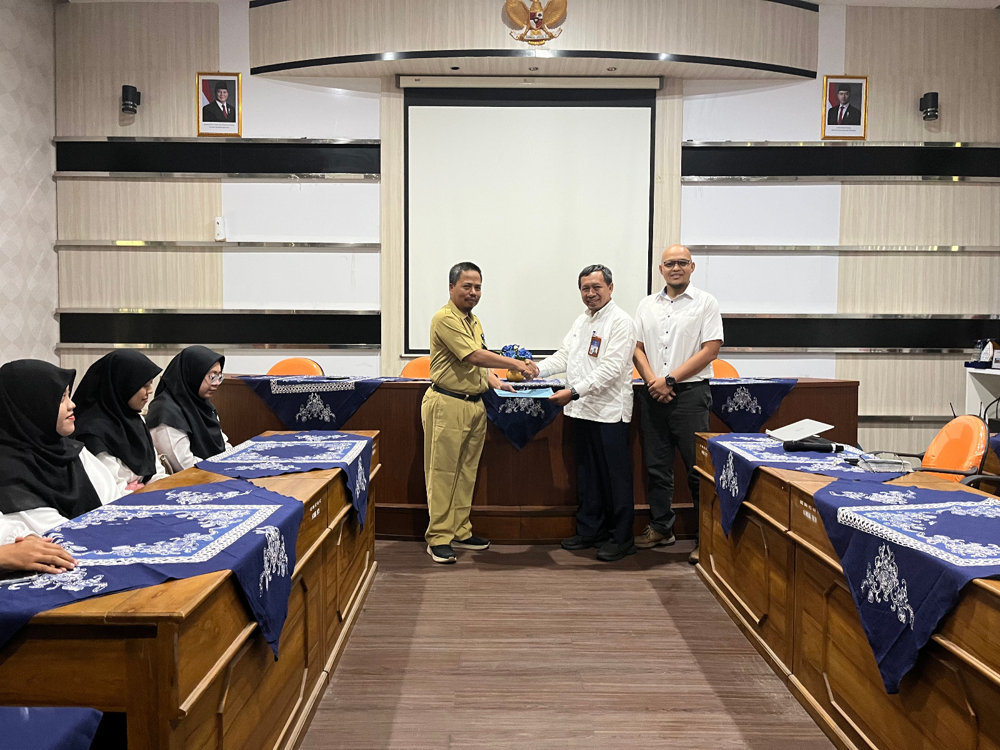
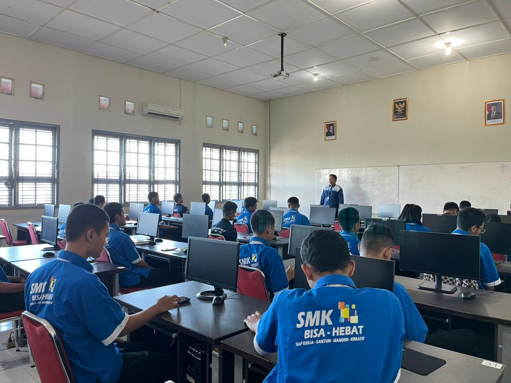
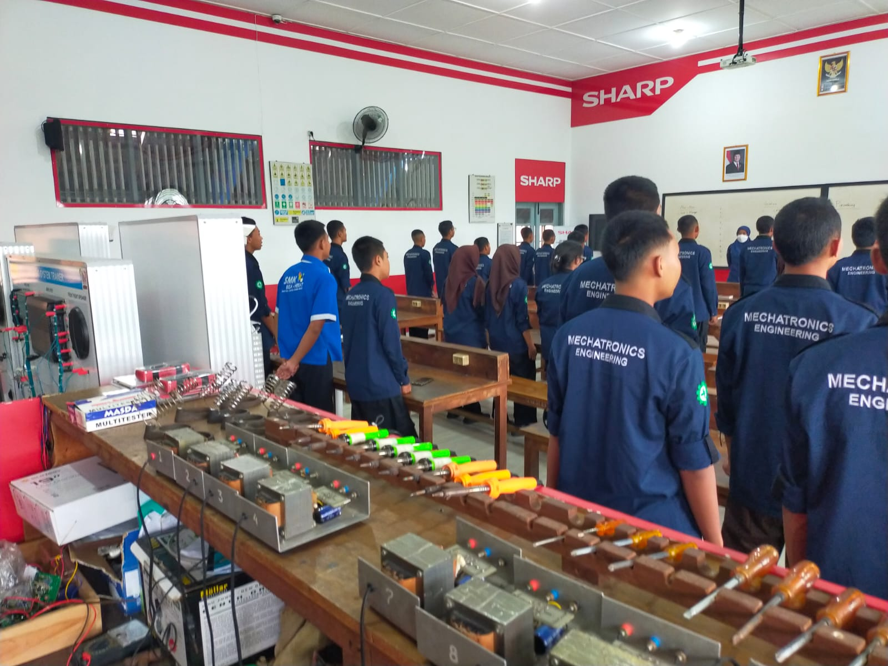
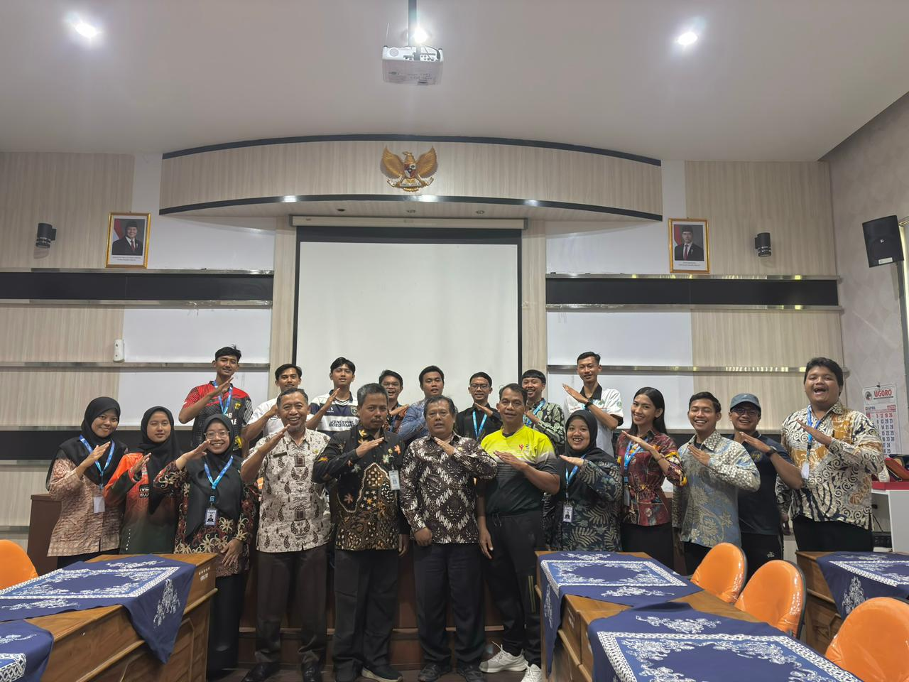

Selamat datang di E-Portofolio saya. Sebuah dedikasi mengintegrasikan ilmu olahraga dan pedagogi inovatif untuk membentuk karakter pelajar yang tangguh, bugar, dan menjunjung sportivitas.
Pendekatan empiris yang mengutamakan nalar kritis, kemandirian teknis, dan budaya kerja industri.
Merancang pengalaman belajar berkonteks industri nyata yang memantik rasa ingin tahu. Peserta didik diajak untuk aktif bereksplorasi, merangkai, dan menemukan solusi secara mandiri di bengkel praktikum.
Memberikan ruang aman bagi productive struggle, di mana kegagalan sistem dilihat sebagai data untuk dianalisis dan diperbaiki.
Penilaian komprehensif yang mengukur pemahaman teori kognitif, presisi psikomotorik alat, dan kematangan sikap kerja.
Menanamkan kedisiplinan, integritas, kolaborasi tim, serta Keselamatan dan Kesehatan Kerja (K3) untuk mencetak lulusan yang tangguh dan siap menghadapi tantangan dunia industri sesungguhnya.
Lembaga Pendidikan Tenaga Kependidikan (LPTK) penyelenggara program PPG Prajabatan yang unggul, inovatif, dan berorientasi pada pendidikan abad 21.
"Leading and Outstanding in Education"
UNY merupakan salah satu LPTK terkemuka di Indonesia yang memiliki komitmen tinggi dalam mencetak guru-guru profesional, berkarakter, dan adaptif terhadap perkembangan teknologi. Sebagai penyelenggara PPG Prajabatan, UNY mengintegrasikan nilai-nilai keunggulan lokal dan global dalam setiap proses pembelajaran.
Program PPG Prajabatan di UNY dirancang untuk membekali calon guru dengan kompetensi pedagogik, profesional, sosial, dan kepribadian yang mumpuni, serta berbasis pada riset dan praktik lapangan.
Jl. Colombo No.1, Karangmalang, Sleman, Daerah Istimewa Yogyakarta
Jejak langkah dari perencanaan, implementasi, hingga refleksi mendalam.
Mengulas identitas saya sebagai calon guru profesional beserta analisis mendalam terhadap artefak modul ajar dan instrumen yang digunakan selama praktik terbimbing siklus 1 hingga siklus 3 (E-Portofolio 1).
Evaluasi menyeluruh dari praktik terbimbing tahapan orientasi hingga praktik terbimbing. Kristalisasi prinsip, keyakinan, dan nilai pengajaran sebagai ideologi perjalanan profesional saya (E-Portofolio 2).
Representasi kompetensi nyata melalui produk digital pembelajaran pilihan.

Studi mendalam karakteristik siswa dan lingkungan belajar di sekolah latihan.
Buka Berkas
Perangkat ajar berdiferensiasi yang disesuaikan dengan kurikulum merdeka.
Buka Berkas
Lembar kerja digital inovatif untuk mengoptimalkan keaktifan motorik siswa.
Buka BerkasTangkapan lensa dari semangat dan keringat di lapangan.



